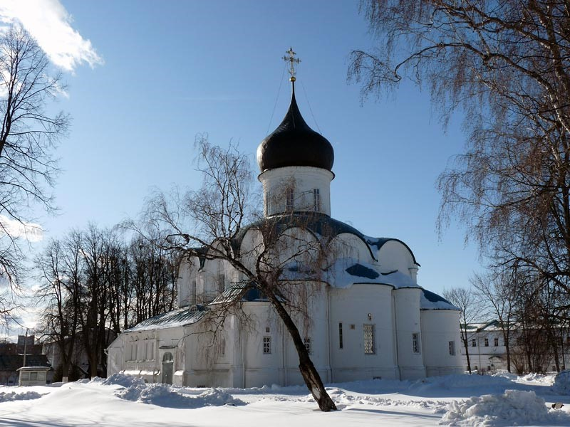
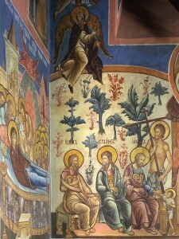

Троицкий собор является частью архитектурного ансамбля Александровской Слободы и частью Успенского монастыря. Вопрос датировки собора до сих пор остается дискуссионным, в связи с переосвящением храма (первоначально он был посвящен Покрову Пресвятой Богородицы) и его перестройками, однако, принято относить его к началу XVI века и связывать с Василием III.
Троицкая церковь являлась домовым храмом (храмом, расположенным при каком-либо строении, учреждении и предназначенным для соответствующей группы верующих) и дошла до наших дней в перестроенном виде.
Архитектура собора отмечена смешением форм. Если сам храм устремлен ввысь, то пристроенная к нему палата по объему «низменна». Выразительный контраст наблюдается и в пластике каждой части, и в уникальности пропорций. Четверик опирается на достаточно высокий цоколь из белого камня и увенчан оригинальным рисунком карниза. Выстроенный в западноевропейских традициях, собор зачастую воспринимался как кирпичный, хотя при сооружении использовался кирпич и белый камень.
Внутренним украшением храма стали выполненные в XVI веке красочные, разнообразные по своим повествовательным сюжетам фрески, а также царские трофеи – привезенные из Новгородского и Тверского соборов. Врата XIV века, установленные в западный и южный порталы.
В подклете алтарной части были погребены известные люди, среди которых генерал, сподвижник Петра Великого Иван Иванович Бутурлин.
В советский период храм не действовал. В 1920-е годы церковные ценности изъяли.С открытием монастыря 1 января 1992 года в Троицком соборе возобновились богослужения по монастырскому уставу. В 2010 году восстановлен пятиярусный иконостас.
Адрес: г. Александров, Музейный проезд, д. 20.

Троицкий собор

Фрески Троицкого собора